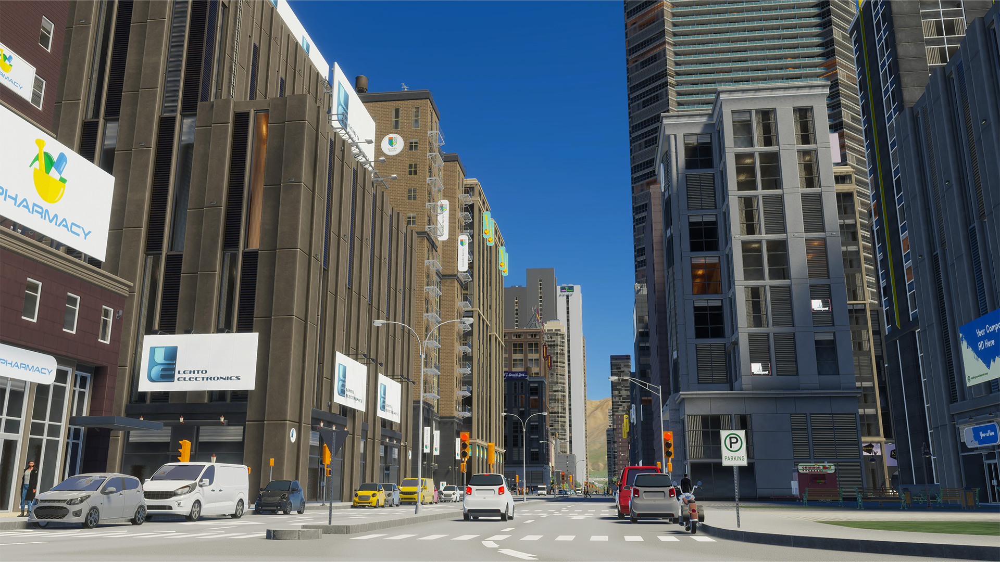
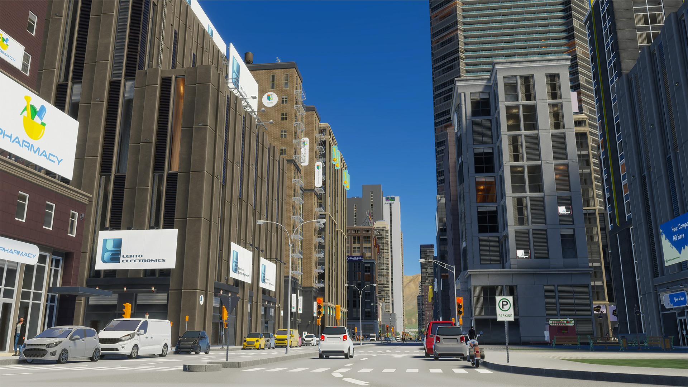

Cities Skylines
¿De que trata ?
"Cities: Skylines" es una popular saga de videojuegos de estrategia, gestión y simulación desarrollada por Colossal Order y publicada por Paradox Interactive. La saga comenzó en 2015 y actualmente cuenta con un total de 2 juegos para varias plataformas. En "Cities: Skylines", los jugadores tienen la tarea de construir y gestionar su propia ciudad, comenzando con un pequeño pueblo y expandiéndolo hasta convertirse en una metrópolis³. Los jugadores deben manejar aspectos como la zonificación, la ubicación de las carreteras, los impuestos, los servicios públicos y el transporte público.
saga es conocida por su enfoque detallado y realista de la gestión de la ciudad, permitiendo a los jugadores experimentar los desafíos de dirigir una ciudad en crecimiento. Los jugadores deben equilibrar las necesidades de su ciudad, como la salud, el empleo y la contaminación, mientras mantienen un presupuesto equilibrado. Además, "Cities: Skylines" ofrece un modo de sandbox que proporciona más libertad creativa para los jugadores, permitiéndoles construir la ciudad de sus sueños sin las restricciones de un presupuesto. A lo largo de los años, se han lanzado varias expansiones y DLC para la saga, añadiendo nuevas características y desafíos para los jugadores. En resumen, "Cities: Skylines" ofrece una experiencia de construcción de ciudades profunda y gratificante para los amantes de los juegos de simulación. Mas informacion
Galeria de imagenes
 


Conoce los juegos de la saga: